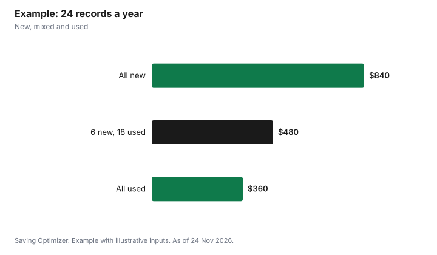

Entertainment · Canada
Collecting Vinyl Without Overspending

Vinyl gets expensive when you buy every new release and limited edition. Set a monthly budget and a want list, buy used where the pressing doesn't matter to you, and check each record's condition before you pay. Used records at shops, thrift stores, estate sales and record fairs are often much cheaper than new pressings.
Key takeaways
- Set a monthly budget and keep a want list so you don't buy on impulse.
- Used records are usually cheaper than new. Check for warps, deep scratches and sleeve damage.
- Learn the common grades, Mint, Near Mint, Very Good Plus, Very Good, Good and Poor, and pay accordingly.
- Limited editions and coloured vinyl cost more without sounding better. Buy them only if you want the object.
- Example: 24 records a year cost $840 new at an example $35, or $360 used at an example $15.
New vs used
New records give you a sealed, clean copy and often include a download code. Used records cost less but need checking. For classic albums with many pressings, a clean used copy is usually the better deal. For new releases, wait for sales, check several shops and compare with the artist's store.
Where to buy used
- Independent record shops: graded and often cleaned, with a fair return policy.
- Record fairs: many sellers in one place. Arrive with a list and cash.
- Thrift stores and estate sales: cheap, but condition varies.
- Marketplace and Kijiji bulk lots: ask for photos of the discs, not just the covers.
- Library sales and community swaps.
Grading
- Hold the record under light and look for scratches you can feel with a fingernail.
- Look along the edge for warps.
- Check the label and the centre hole.
- Look at the sleeve and jacket for water damage, mould and splits.
- Ask to play a track if the shop has a listening station.
Setup
You don't need expensive gear to start. A basic turntable with a decent cartridge, an amplifier or powered speakers, and a brush is enough. Avoid very cheap all-in-one players with heavy tonearms that can wear records. Buy gear used from a shop that tests it, or new during a sale; see our cheap hobbies guide for other low-cost hobbies.
Plan: an example yearly budget
These are example prices, not quotes. You buy two records a month, 24 a year. New: an example $35 each. Used: an example $15 each.

New: 24 × $35 = $840. Used: 24 × $15 = $360. A mix of 6 new and 18 used costs 6 × $35 + 18 × $15 = $210 + $270 = $480. Physical media more broadly is in our used DVDs and Blu-ray guide.
Sources
- Discogs grading guide (Goldmine-style grades: Mint, Near Mint, Very Good Plus, Very Good, Good, Poor), checked 24 Nov 2026.
Frequently asked questions
Are used records worth buying?
Yes, if you check the condition. Used records are usually cheaper than new and many sound as good.
How do I check a used vinyl record?
Look for deep scratches, warps, label damage and sleeve damage, and play a track if you can.
Is coloured vinyl better?
No. Coloured or limited editions cost more for the look, not better sound.
What do vinyl grades mean?
Common grades run from Mint and Near Mint through Very Good Plus, Very Good, Good and Poor. Higher grades cost more.
How much should I spend on a turntable to start?
Enough to avoid heavy-tonearm all-in-one players. A basic turntable with a decent cartridge and powered speakers is enough to start.
Researched and drafted with AI assistance and fact-checked against official Canadian sources. How we create content.
Note: Prices are examples. Check condition before you buy. Education only.